UX Study Tool
Problem:
Due to social anxiety, financial restrictions, and accessibility issues, college students struggle finding resources of academic success
Solution:
A platform which enables them to conveniently seek help either digitally or in-person.
Resources
Sketch
Adobe CC
Framer
Role
UX Designer
Wireframes
User Testing
Occaison
UX Design Capstone
Western Washington University
Artefact Design Strategy Firm
Project Goals
Promote Collaboration
Ensure Accessibility
Include All Academics
.png)
Offer Low Pressure Help
Prototyping
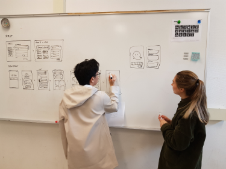 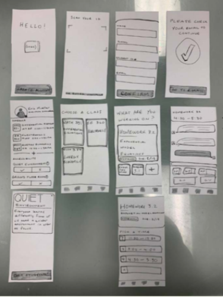.png) 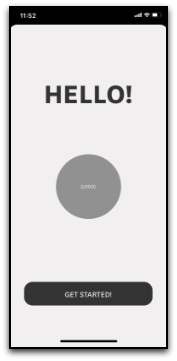
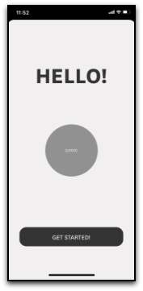
User Testing Takeaways
Onboarding Process
After arriving to the accessibility options, a lack of description/context about the accessibility options caused ambiguity for users as to the purpose of the accessibility section.
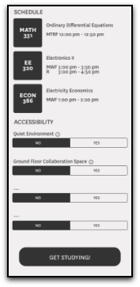The Solution
Changing the Accessibility section to Study Preferences aided in the flow of user interaction. We also learned it’s important to not put a target on those with specific needs.
Creating Assignment
The + button was isolated too far from the created assignments, rendering the users confused of the button’s purpose (to create new assignments).
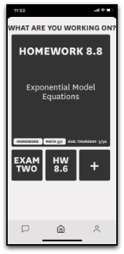The Solution
By utilizing proximity, and bringing the + button closer to the assignment anchors, we were able to better articulate the purpose of the button and how to create new assignments.
User Chat
Users were unsure what to do upon being directed to the chat screen. It caused a lot of dissonance in the user flow.
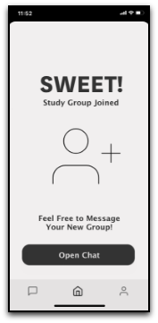Solution
We found that user chat was an expensive and unnecessary feature for our project. Ultimately, we decided to remove it in order to smooth over the process of following up with study sessions.
Branding Concepts


Type Candidates
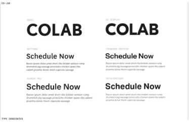Design Takeaways
The National typeface along with the monochromatic color scheme coincided with our project goals to create an intuitive system that encourages university inclusivity and accessibility for all students.
Final Design
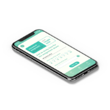 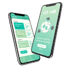 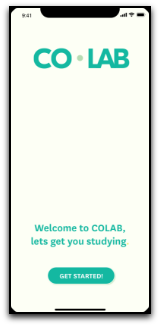